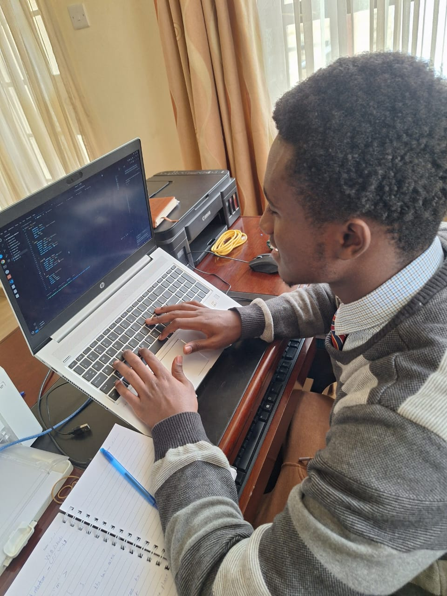

My career software engineering
I am deeply passionate about pursuing software engineering as my career path because it combines creativity, problem-solving, and innovation in ways that truly inspire me. I enjoy the challenge of turning ideas into functional solutions through code, and I see software engineering as a field where learning never stops. The opportunities within this profession are endless—from building applications that improve people’s lives, to contributing to groundbreaking technologies that shape the future. What excites me most is not only the ability to solve real-world problems but also the chance to grow continuously, collaborate with others, and make a meaningful impact on society through technology.
